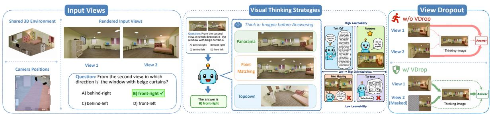

How and What to Imagine? Visual Thinking in Unified Multimodal Models for Cross-View Spatial Reasoning Qian Yang , Ankur Sikarwar , Huy Le , Le Zhang , Zhuan Shi , Perouz Taslakian , Aishwarya Agrawal arXiv 原文链接
Figureure 2 · : VDrop attention maskFigure 2: VDrop attention mask. Answer queries $Q _ { a }$ cannot attend to the masked region (red hatched), while thinking-image queries $Q _ { \mathrm { v t } }$ retain full access to all.这张可视化用来解释 How and What to Imagine? 学到的中间表征或对齐关系。重点看它是否支持正文里的机制判断。

Figureure 1 · : Visual thinking for cross-view spatial reasoningFigure 1: Visual thinking for cross-view spatial reasoning. Given two input views and a cross-view spatial question (left), a UMM can generate one of three intermediate thinking-image types (middle) before answering: panorama, point matching, or top-down. Right: without View Dropout, the answer pathway takes a shortcut through the input views, leaving the generated thinking-image unused; with View Dropout, part of one input view is masked, forcing the answer to route through the thinking-image and making visual thinking causally load-bearing.这张图来自论文 PDF 的结构化抽取。当前用于辅助理解 How and What to Imagine? 的方法或实验，请结合正文精读段落一起看。